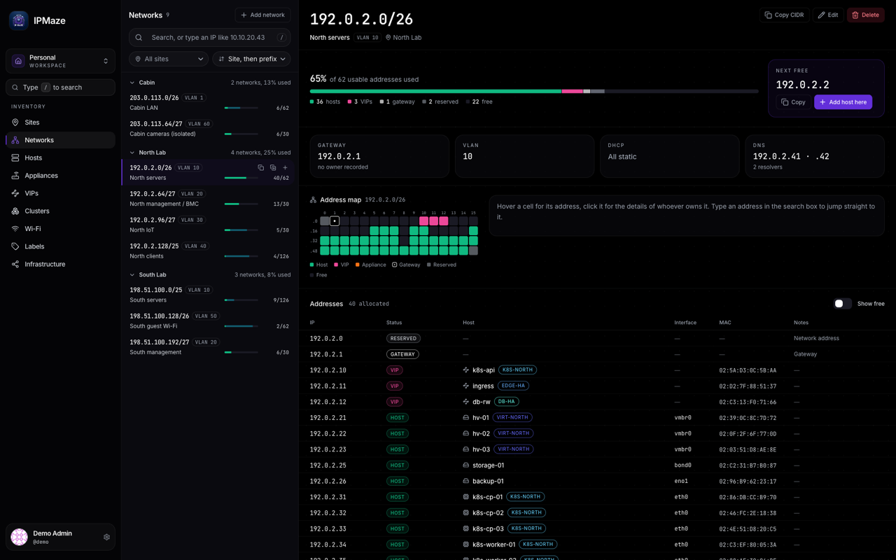

Flagship
IPMaze
IP address management for homelabs and small networks. Sites, networks, Wi-Fi, hosts and the VPNs between them, documented in one place instead of a spreadsheet.
- Sites, networks, SSIDs, hosts, interfaces, VIPs, clusters and VPNs
- Sites on a map, with a speedtest agent for bandwidth and public IP
- REST API with interactive docs and tokens for your scripts
- Local accounts with TOTP 2FA, or single sign-on via OIDC
- Audit log and JSON export of the whole workspace
- SQLite by default, PostgreSQL when you need it
// self-hosted today. a SaaS edition, hosted on our own infrastructure, is a work in progress.
